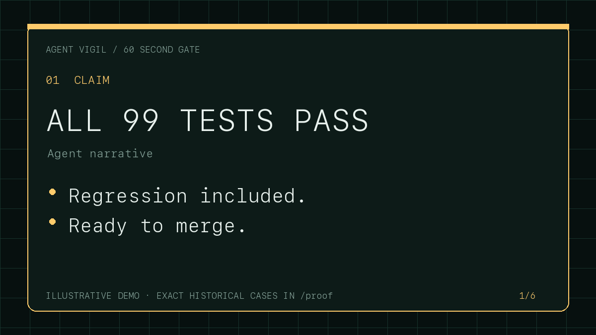

Stale Action artifact returned a false PASS
Malformed evidence reused an earlier run’s receipt. Hosted CI blocked v0.4 until every invocation received a fresh artifact directory.
Exact SHAs and runs →Deterministic evidence gate
Agent Vigil compares an AI coding agent’s claims with the exact Git change, fresh tests, and base-anchored policy. Missing proof never becomes a green check.
Open source · local-first · zero runtime dependencies · no model grading another model
CLAIM All 99 tests pass. ✗ test-count claimed 99 / runner observed 42 ✗ differential-base-fail changed test also passes on base ✓ integrity-scan verification surface unchanged FAIL · sha256:c3128a2c6abc…
Dogfood the control
Three first-party release failures show the standard: publish the claim, exact vulnerable and corrected revisions, maintainer disposition, negative control, and remaining limit. These cases are not counted as external adoption.

Malformed evidence reused an earlier run’s receipt. Hosted CI blocked v0.4 until every invocation received a fresh artifact directory.
Exact SHAs and runs →A broad package allowlist captured publisher-machine state. The release stopped and a planted-contamination replay became a gate.
Exact package controls →An adversarial filesystem fixture overwrote the link target. v0.8 rejects unsafe destinations and replaces outputs atomically, with POSIX mode 0600.
Reproduction and limit →Two-minute setup
The maintainer profile adds exact-SHA workflow identity, human responsibility declarations, change budgets, and a differential base-fail/head-pass regression gate.
npx --yes github:sulmusic2-star/agent-vigil#v0.9.0 init --profile maintainer
Then run npx --yes github:sulmusic2-star/agent-vigil#v0.9.0 doctor and review every generated command before merging.
The GitHub package route is shown until the npm package is confirmed live. Repository test commands execute repository code; Agent Vigil is not a sandbox.